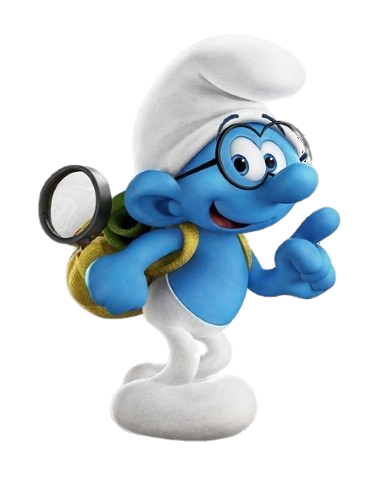
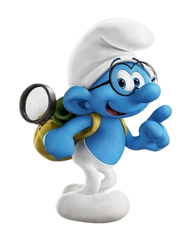
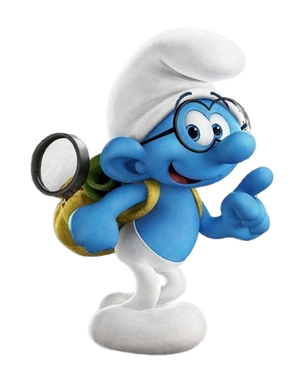
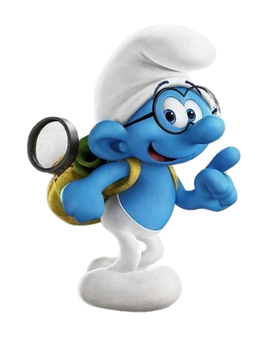

Brainy Smurf thinks he’s smarter than he really is, and he is certain that he’s smarter than everyone else. This is a Smurf who does not suffer from self-doubt. Brainy considers himself the most responsible member of the band and has proclaimed himself the right-hand man to Papa Smurf. He loves to talk, and he is often repeating phrases such as, Like Papa Smurf always says… or Papa Smurf is always right, and when he says that… The other Smurfs just roll their eyes and find inventive ways to shut him up.